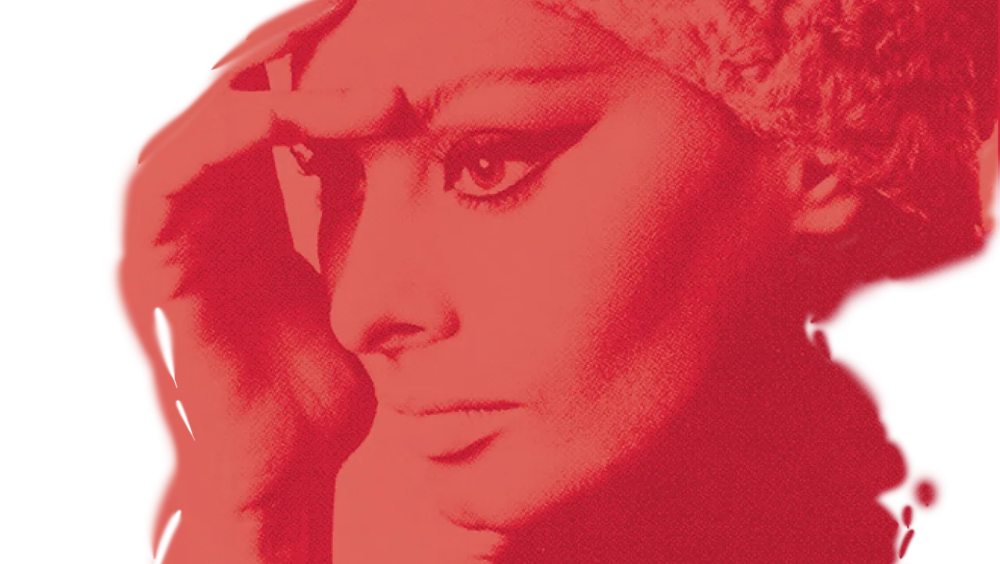

Book
Timeless Tribute to Sophia Loren
This bilingual art catalog accompanied “Sophia Loren México: Ayer, Hoy y Mañana,” the exhibit that opened in September 2014 at the Museo Soumaya in Mexico City. It honors Loren’s life in film and her influence on fashion, with photographs, essays and interviews.
As the specialist editorial consultant, I designed the visual narrative that guides readers through her career: a red-and-white system built around portraits, magazine covers and the garments themselves, and a foldout timeline that holds seven decades on one sheet.
- Role
- Specialist Editorial Consultant
- Client
- Museo Soumaya
- Project
- Special exhibit art catalog, 2014
- Photography
- Special collaboration
- Editor
- Museo Soumaya staff
Sophia Loren: A Life in Film
En el tiempo
Foldout timeline · 1934–2014
Step into the world of a cinematic legend. From her early days in Italian cinema to her iconic Hollywood roles, the timeline offers a glimpse of the career of an actress whose talent has captivated audiences around the world.
Moda
Fashion on the page
Catalog spreads
The book follows Loren’s influence on fashion through portraits, magazine covers and essays, with garments and accessories from the exhibit set beside the images that made them famous.